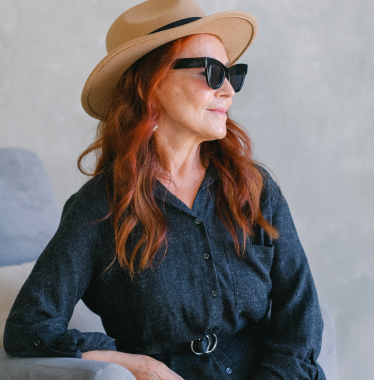
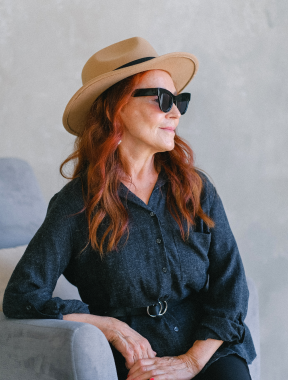
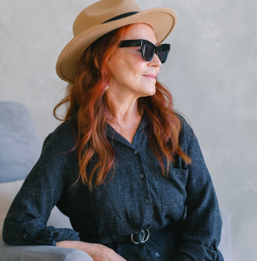
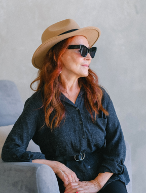

Как не утонуть в тревоге и управлять своими страхами
- Автор: Лиза Файнтух
- 21.08.2021
- Self
 Содержание
Содержание
- Как понять, что отношения с мамой были дисфункциональными и привели к травме?
- Мама привет!
- Ну вот опять заголовок который как «привет мама»
- Как понять, что вы страдаете от материнской травмы?
Заголовок h3
Один из самых важных навыков, которые может дать работа с психотерапевтом - умение в разных ситуациях по-разному обходиться со своими эмоциями. Снять этот процесс с автопилота и перевести его в поле сознания.
Давайте, к примеру, разберем тревогу. Можно разложить перед собой целую коллекцию доступных реакций и выбрать нужную:

Мы знаем, что нуждаться в помощи и поддержке в трудные периоды жизни абсолютно нормально для любого человека, и стремимся сделать психотерапию безопасной, удобной и доступной каждому
Что еще можно делать с тревогой?
- Управлять ей через что-то внешнее: включать музыку, которая создает другое настроение, сесть за работу с цифрами, которая быстренько активизирует другие участки мозга, читать блоги, которые вас успокаивают и отвлекают.
- А еще порой можно разрешить себе тревогу заесть чем-то вкусным. Это, конечно, не самая здоровая стратегия, но в ряде ситуаций можно считать ее вполне рабочей. Особенно, когда внутренний ресурс на нуле, а поддерживающее окружение не в доступе.

Онтогенез речи отражает групповой эриксоновский гипноз.
Чем шире доступный вам репертуар реакций и чем более осознанно вы можете выбирать из него то, что лучше всего подойдет в каждой конкретной ситуации, тем больше будет ваша устойчивость к стрессу, депрессии, неопределенности, да и к жизни в целом.
Мы знаем, что нуждаться в помощи и поддержке в трудные периоды жизни абсолютно нормально для любого человека, и стремимся сделать психотерапию безопасной, удобной и доступной каждому
Одна из ключевых задач психотерапии как раз и заключается в том, чтобы этот репертуар расширять и обучать человека пользоваться доступными ему реакциями в той последовательности, пропорции и объеме, которые подходят именно ему. Без оглядки на то, "как правильно" или "как у других".
 



Чем шире доступный вам репертуар реакций и чем более осознанно вы можете выбирать из него то, что лучше всего подойдет в каждой конкретной ситуации, тем больше будет ваша устойчивость к стрессу, депрессии, неопределенности, да и к жизни в целом. А еще порой можно разрешить себе тревогу заесть чем-то вкусным.
Чем шире доступный вам репертуар реакций и чем более осознанно вы можете выбирать из него то, что лучше всего подойдет в каждой конкретной ситуации, тем больше будет ваша устойчивость к стрессу, депрессии, неопределенности, да и к жизни в целом.
Упражнение #1
Нужно последовательно напрягать и расслаблять каждую мышцу в теле на несколько секунд. Напрягать стоит довольно сильно, чтобы потом отчетливее ощущать расслабляющий эффект. Начать можно с пальцев ног и постепенно подниматься вверх. Смысл в том, чтобы через напряжение дать стрессу выход, а затем вновь привести себя в спокойное состояние через расслабление
Что еще можно делать с тревогой?
- Управлять ей через что-то внешнее: включать музыку, которая создает другое настроение, сесть за работу с цифрами, которая быстренько активизирует другие участки мозга, читать блоги, которые вас успокаивают и отвлекают.
- А еще порой можно разрешить себе тревогу заесть чем-то вкусным. Это, конечно, не самая здоровая стратегия, но в ряде ситуаций можно считать ее вполне рабочей. Особенно, когда внутренний ресурс на нуле, а поддерживающее окружение не в доступе.

Чем шире доступный вам репертуар реакций и чем более осознанно вы можете выбирать из него то, что лучше всего подойдет в каждой конкретной ситуации, тем больше будет ваша устойчивость к стрессу.
Чем шире доступный вам репертуар реакций и чем более осознанно вы можете выбирать из него то, что лучше всего подойдет в каждой конкретной ситуации, тем больше будет ваша устойчивость к стрессу, депрессии, неопределенности, да и к жизни в целом.
Упражнение #2
Нужно последовательно напрягать и расслаблять каждую мышцу в теле на несколько секунд. Напрягать стоит довольно сильно, чтобы потом отчетливее ощущать расслабляющий эффект. Начать можно с пальцев ног и постепенно подниматься вверх. Смысл в том, чтобы через напряжение дать стрессу выход, а затем вновь привести себя в спокойное состояние через расслабление


Чем шире доступный вам репертуар реакций и чем более осознанно вы можете выбирать из него то, что лучше всего подойдет в каждой конкретной ситуации, тем больше будет ваша устойчивость к стрессу, депрессии, неопределенности, да и к жизни в целом.
Чем шире доступный вам репертуар реакций и чем более осознанно вы можете выбирать из него то, что лучше всего подойдет в каждой конкретной ситуации, тем больше будет ваша устойчивость к стрессу, депрессии, неопределенности, да и к жизни в целом.

Одна из ключевых задач психотерапии как раз и заключается в том, чтобы этот репертуар расширять и обучать человека пользоваться доступными ему реакциями в той последовательности, пропорции и объеме, которые подходят именно ему. Без оглядки на то, "как правильно" или "как у других".
Упражнение #1
Нужно последовательно напрягать и расслаблять каждую мышцу в теле на несколько секунд. Напрягать стоит довольно сильно, чтобы потом отчетливее ощущать расслабляющий эффект. Начать можно с пальцев ног и постепенно подниматься вверх. Смысл в том, чтобы через напряжение дать стрессу выход, а затем вновь привести себя в спокойное состояние через расслабление